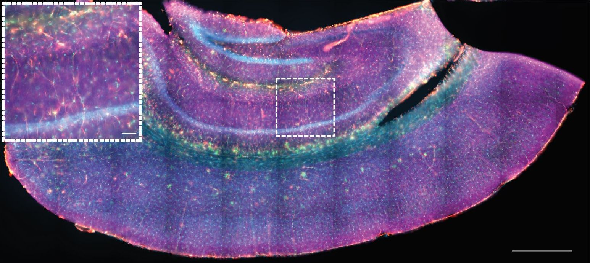

1st Place
Pushing boundaries
Harsha Mahabaleshwar (LKCMedicine)
Two-day-old zebrafish embryos mounted end to
end, and their developing fins imaged on Zeiss LSM800 – Axio
Imager.Z2, using 40x W Plan-Apochromat objective, 488 nm and 561 nm
lasers, and tile function. Images were stitched on Fiji/ImageJ and
further processed using its maximum intensity projection, background
subtraction and brightness-contrast functions to highlight the
details.

2nd Place
Hungry Scientist's Ferrero Rocher
Natalie Yeo, Ng Chun Yi and Christine
Cheung (LKCMedicine)
Human patient-derived endothelial cells coating
a microcarrier bead within a fibrin gel, stained for F-actin (red) and
nuclei (cyan). Fibrin gels were ~2mm-thick and seeded in an 8-well
chambered coverslip well. Image was acquired with an inverted laser
scanning confocal microscope (LSM800, Carl Zeiss) using a
Plan-Apochromat 20x/0.80 objective lens. Two-channel Z-stack images
(AF568 and DAPI) of beads were captured using ZEN software (blue
edition, Carl Zeiss) with 100 – 200 Z-slices were acquired for the
bead. To correct for differences in signal intensity across the large
Z-axis range of each bead, the setting ‘auto-Z brightness correction’
was checked with laser power adjusted at 3 - 4 positions along the
Z-axis. Final image is maximum intensity Z-projection with channels
combined to form a composite image. Scale bar, 100 µm.

3rd Place
The Coccoid Entanglement
Choo Pei Yi (SCELSE)
Imaged here are strings of Enterococcus
faecalis cells, incapable of separation due to a mutation in a cell
wall hydrolase gene. Cells were pulsed sequentially in two different
colored cell wall labelling fluorescent probes to distinguish between
the old (red) and new (cyan) cell wall. Images were acquired using the
Carl Zeiss ELYRA PS.1 and processed via Structured illumination
microscopy (SIM) at 100x magnification. Scale bar: 2 μm
❮
❯
NOBIC Image Contest 2021
NOBIC has organised an image contest for users of NOBIC imaging
facilities (AOBIP at LKCMedicine and ABIF at SCELSE). The contest was
open for image submission during July 2021. We have received 29 images
which were then anonymously evaluated by an international panel of
judges comprising representatives from academia and industry:
- Prof. Peter Török, NOBIC, NTU, Singapore, panel chair
- Dr. Anne Beghin, SiMBA, MBI, NUS, Singapore, panel vice chair
- Dr. Karthik Damodaran, Sciencewerke Pte Ltd, Singapore
- Dr. Samuel Ko, Carl Zeiss Pte Ltd, Singapore
- Dr. Marie Olšinová, IMCF, Charles University in Prague, Czech
Republic
- Dr. Šárka Pokorná, Weizmann Institute of Science, Israel
- Dr. Thankiah Sudhaharan, A*STAR Microscopy Platform, Singapore
In the first round, the judges selected 10 finalists and in the second
round they selected 3 winners from among the finalists. We's like to
congratulate here to the winners and finalists and to express our thanks
to the panel of judges. Last but not least, we'd like to thank all
participants of the contest. There were more great images than there
could be finalists. We hope many more equally fascinating images will be
acquired at NOBIC Facilities and we are looking forward to helping you
along the journey.
Prizes for the winners were contributed by LKCMedicine, SCELSE and
sponsors of the contest:


For more details refer to the contest announcement (PDF).
Other Finalists (in alphabetical order of image
titles):

Enraged Sprouts
Natalie Yeo, Ng Chun Yi and Christine
Cheung (LKCMedicine)
Human endothelial cells sprouting from a
cell-coated microcarrier bead within a fibrin matrix, stained for
F-actin (red) and nuclei (cyan). These endothelial cell-coated beads
were embedded within a ~2mm-thick fibrin gel in 8-well chambered slides.
Image was acquired with an inverted laser scanning confocal microscope
(LSM800, Carl Zeiss) using a Plan-Apochromat 20x/0.80 objective lens.
Two-channel Z-stack images (AF568 and DAPI) of beads were captured using
ZEN software (blue edition, Carl Zeiss) with 100 – 200 Z-slices were
acquired for each bead. To correct for differences in signal intensity
across the large Z-axis range of each bead, the setting ‘auto-Z
brightness correction’ was checked with laser power adjusted at 3 - 4
positions along the Z-axis. Final image is a maximum intensity
Z-projection with channels combined to form a composite image. Scale
bar, 100 µm.

Hippocampus
Vibhavari Bansal (LKCMedicine)
Hippocampus from an Alzheimer's mouse model
stained by immunohistochemistry for 3 cellular stains. Taken on Axio
Scan.Z1 20x lens, single plane, 40 micron mounted section Scale bars:
650μm and 65μm for zoomed inset
Hoechst (Turquoise)
IBA1 (Green
GFAP (Orange)
MAP2 (Violet)

Intracranial vascular system in zebrafish
embryo
Kaliya Perumal Arun Kumar and Philip
Ingham (LKCMedicine)
Intracranial vascular system in a double
transgenic reporter zebrafish embryo with GFP labelled endothelial cells
and DsRed labelled blood cells

Living on the Edge
Choo Pei Yi (SCELSE)
Imaged here is the edge of a mixed species
macrocolony biofilm (Escherichia coli and Staphylococcus aureus)
labelled with SYTO 9 (green) and propidium iodide (red). Dead S. aureus
cells can be seen speckled across a sea of E. coli cells. Image was
acquired on the Carl Zeiss Axio Observer Z1 at 100x magnification. Scale
bar: 5 μm

The Colorful Jurong Sludge
Wong Lan Li (SCELSE)
The special filamentous microbial species taking
up fluorescently active nanoplastic (50um) that is neither the general
filamentous chloroflexi (magenta) nor the eubacteria (blue)

United, we will divide
Chengxun Su (LKCMedicine)
When a cell undergoes mitosis, the chromatin
condensates to chromosomes while most of the Ki-67 protein relocate to
the surface of the chromosomes. Here we observe this phenomenon in a
human aortic endothelial cell (center) through visualization of F-actin
(red), nuclei (blue), and Ki-67 (green). This well-orchestrated process
is the genesis of dividing cells.
Imaging details:
1. The microscope and objective lens used: inverted Confocal Airyscan
Microscope with live imaging capabilities (LSM800), 40x objective lens
with oil immersion
2. Imaging modality: snapshot
3. Imaged area dimensions: 203 micron x 203 micron
4. Type of sample: fixed cells
5. Main image processing steps: converted czi to tiff using Zen

Yin and Yang of the length axis
Harsha Mahabaleshwar (LKCMedicine)
Two-day-old zebrafish embryos mounted side by
side and imaged on Zeiss LSM800 – Axio Imager.Z2, using 10x
Plan-Neofluar objective, 488 nm and 561 nm lasers, and multiple tile
function. Images were stitched together using ZEN 2.3 and further
processed using the maximum intensity projection, background subtraction
and brightness-contrast functions on Fiji/ImageJ to highlight the
details. The right Tg(ET37:Egfp, 7xTCFXla.Siam:nlsmCherry) embryo shows
the enrichment of red WNT signaling in the posterior regions of the
trunk. In contrast, the left Tg(ET37:Egfp, BMPRE-AAV.Mlp:mKOFP2) embryo
shows the enrichment of red BMP signaling in the anterior regions of the
trunk. The two morphogen signaling pathways both depicted in red, are
active at the two opposite ends of the trunk axis.